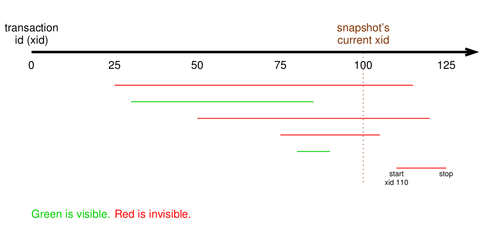

MVCC model¶
What's MVCC ?¶
A good reading (rather complete) could be found here : http://momjian.us/main/writings/pgsql/mvcc.pdf. BTW, you could have a look to all PDFs available in Momjian repo : http://momjian.us/main/writings/pgsql/.
PostgreSQL is a Multiversion Concurrency Control (MVCC) database : what does that mean ?
MVCC ensure readers never block writers, and writers never block readers.
When a transaction begins, the changed rows are flagged with a transaction ID and as it's committed, it's flagged again with an expiration ID.
At any moment, there is a current transaction ID in the server. For any transaction at this moment, data rows are visible if their expiration ID is less than the current ID.
.
So a deleted row is not really deleted, it's just not visible anymore. And an updated row is first deleted, and its new value is inserted.
Regain space¶
Of course, one of the big downside of MVCC is its forever growing size. Two Postgres mecanism are dedicated to this task :
- cleanup : is only triggered by some queries and only concern some tuples. It doesn't clean indexes.
- autovacuum : does the full job but take a longer time and more CPU / IOs. See details.